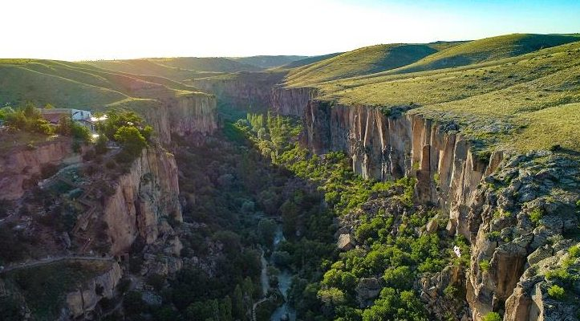

Tarihi kaynaklardaki adı Peristremma olan Ihlara Vadisi bitki örtüsü, kilise ve şapelleriyle; doğa, tarih, sanat ve kültür olgusunun bir araya geldiği nadir alanlardandır.Aksaray İli Güzelyurt İlçesi sınırları içerisinde bulunan Ihlara Vadisi dünya üzerindeki kanyonlar arasında önemli bir yere sahiptir. 18 kilometre uzunluğunda, ortalama 150 metre derinliğinde ve 200 metre genişliğinde, bünyesinde binlerce yaşam alanı bulunan Ihlara Vadisi, diğer kanyonlardan farklı olarak geçmiş dönemlerde içerisinde insanların yaşadığı dünyanın en büyük kanyonu olma özelliğini taşımaktadır. Ihlara Vadisini şekillendiren ve vadiye hayat veren Melendiz Nehri buradaki yaşamın ana kaynağıdır. Vadiyi çevreleyen kayaçların kolay yontulmasıyla oluşturulmuş yüzlerce kilise ve kaya oyma mekan, vadiyi dünyanın en önemli kültür ve medeniyet merkezlerinden biri haline getirmiştir.
Ihlara Vadisi'ndeki kayalara oyulmuş freskli kiliseler korunarak, eşine rastlanmayan bir tarih hazinesi olarak günümüze ulaşmıştır. Hıristiyanlığın ilk yıllarından itibaren kayaların rahatlıkla kazılmasıyla meydana getirilen bu freskli kiliseler ve iskân yerleri 14 kilometre boyunca Ihlara'dan Selime'ye kadar devam eden Ihlara Vadisi içerisinde yer alırlar. İlk çağlarda Kapadokya Irmağı'nın (Patamos Kapadokus) ortasında tabiatla tarihin bir arada bulunduğu Ihlara Vadisi'ndeki bu kiliselerin ilk örnekleri MS IV. yüzyıla kadar görülmektedir. Kiliselerin resim tekniği iki kısma ayrılabilir. Ihlara civarındaki kiliseler "Kapadokya Tipi" olarak bilinen özellikler gösterirler. Bunlara örnek olarak: Eğritaş, Ağaçaltı, Kokar, Pürenliseki ve Yılanlı Kiliseleri verilebilir. Belisırma bölümünde bulunanlar ise "Bizans Tipi" resimlerle süslüdür.

Ihlara Vadisi’nin dikkat çeken bir başka özelliği ise doğasıdır. Duvar gibi dik, derin ve dar vadinin tabanındaki suyun kenarında, bağlar ve bahçelerden oluşan yoğun bir yeşillik şeridi yer alır. Sanki doğa kendini vadi içine gizlemiştir. Vadi çevresinde bozkır görünüşlü ve cılız bitki örtüsü hâkimdir. Vadinin yamaçlarına geldiğinizde ise zengin ve yeşil bir doğa parçasının vadi içinde saklandığını görürsünüz. İşte bu gizlenmiş olma durumu, vadinin özel yerini de belirlemiştir. Vadi tabanında bölgedeki karasal iklimden farklı olarak, Akdeniz iklimine yakın bir iklim görülmektedir. Vadi tabanı bu özelliği ile doğal bir mikroklima alanıdır. Buna bağlı olarak vadi tabanında başta Antep fıstığı olmak üzere çok çeşitli bitkiler yetişmektedir.